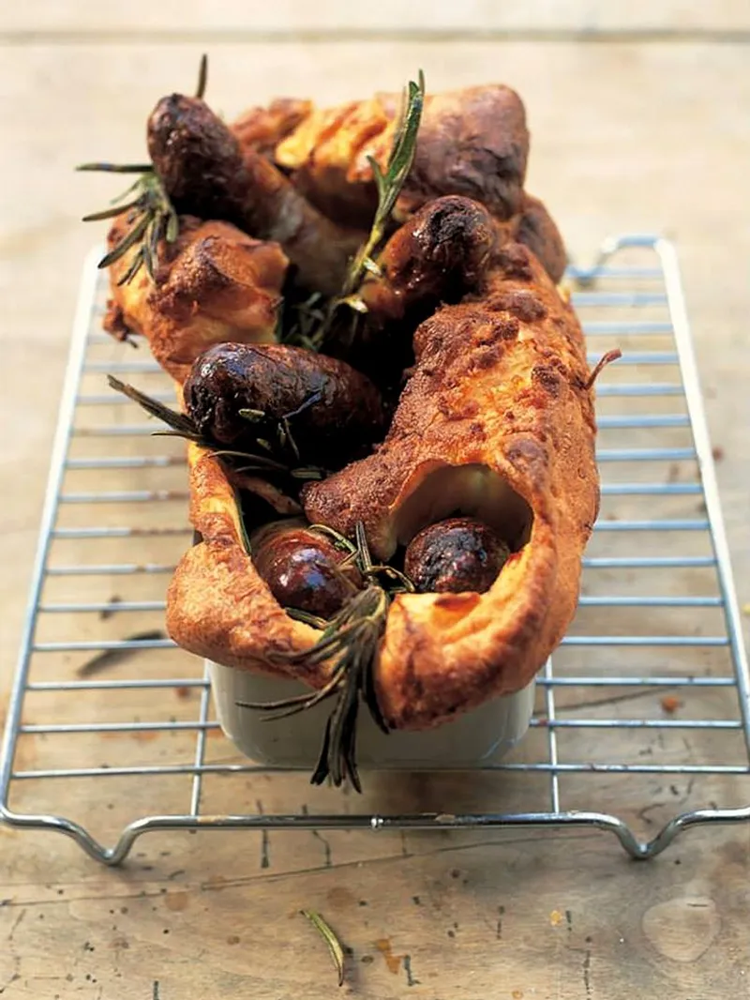

Toad in the hole

Description
Toad in the hole or sausage toad is a traditional English[1][2] dish consisting of sausages in Yorkshire pudding batter,
usually served with onion gravy and vegetables.[3] Historically,
the dish has also been prepared using other meats, such as rump steak and lamb's kidney.
Ingredients
- sunflower oil
- 8 higher-welfare sausages
- 4 sprigs of fresh rosemary
- 2 large red onions
- 2 cloves of garlic
- 2 knobs of unsalted butter
- 6 tablespoons balsamic vinegar
- 1 level tablespoon vegetable stock powder or 1 organic vegetable stock cube
- 285 ml milk
- 115 g plain flour
- 3 large free-range eggs
Steps
- Whisk the batter ingredients together with a pinch of sea salt, and put to one side. I like the batter to go huge so the key thing is to have an appropriately-sized baking tin , the thinner the better as we need to get the oil smoking hot.
- Put 2 tablespoons of sunflower oil into a baking tin, then place on the middle shelf of your oven at its highest setting (240 to 250ºC/475ºF/gas 9). Place a larger tray underneath it to catch any oil that overflows from the tin while cooking.
- When the oil is very hot, add the sausages keep an eye on them and allow them to colour until lightly golden.
- At this point, take the tin out of the oven, being very careful, and pour the batter over the sausages. Throw a couple of sprigs of rosemary into the batter.
- It will bubble and possibly even spit a little, so carefully put the tin back in the oven, and close the door. Don't open it for at least 20 minutes, as Yorkshire puddings can be a bit temperamental when rising. Remove from the oven when golden and crisp.
- For the onion gravy, peel and finely slice the onions and garlic, then simply fry off in the butter on a medium heat for about 5 minutes, or until they go sweet and translucent. You could add a little thyme or rosemary here, if you like. Add the balsamic vinegar and allow it to cook down by half.
- At this point, I do cheat a little and add a stock cube or powder. You can get some good ones in the supermarkets now that aren't full of rubbish. Sprinkle this in and add a little water. Allow to simmer and you'll have a really tasty onion gravy.
- Serve at the table with the Toad in the hole, mashed potatoes, greens and baked beans or maybe a green salad if you're feeling a little guilty!
Return to home page